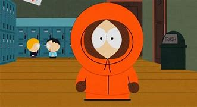

KENNY

Kenny McCormick é um dos quatro protagonistas de South Park,
conhecido por seu icônico capuz laranja que cobre quase todo o rosto,
tornando sua fala difícil de entender. Ele vem de uma família pobre
e muitas vezes enfrenta situações extremas, incluindo sua morte frequente
nos primeiros anos da série, sempre acompanhada pela famosa frase:
"Oh my God, they killed Kenny!". Apesar disso, ele retorna sem
explicação no episódio seguinte. Kenny também tem um lado misterioso
e heroico, assumindo a identidade do vigilante Mysterion.
Seu personagem é um dos mais enigmáticos e queridos pelos fãs da série.
VOLTAR